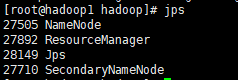
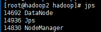
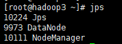
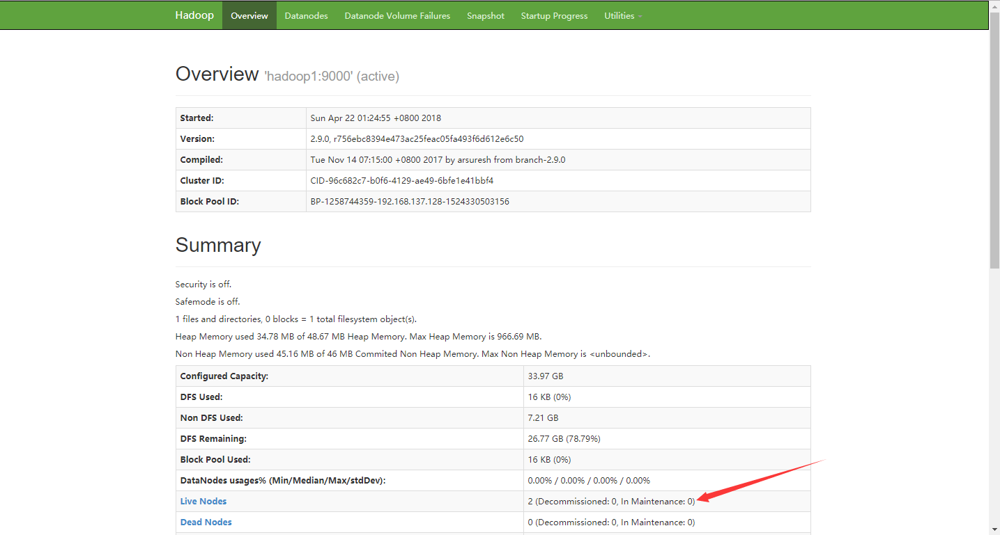
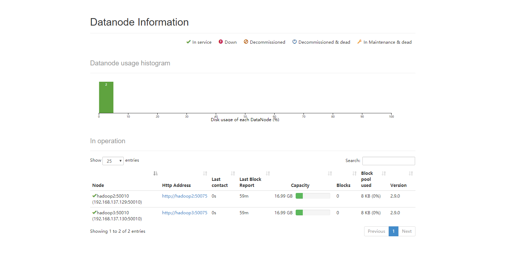
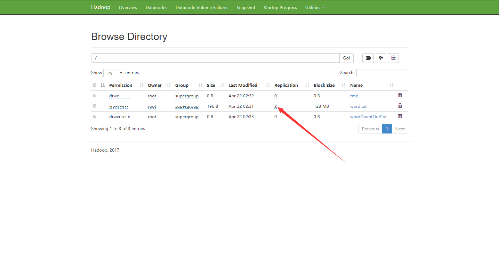

hadoop分布式配置及测试
在伪分布式基础上配置完全分布式
前提条件：jdk安装、hadoop安装、配置环境变量、修改主机名 请移步伪分布式配置
集群规划
主机名|ip|进程
-|:-:|-:
hadoop1|192.168.137.128|NameNode ResourceManager SecondaryNameNode
hadoop2|192.168.137.129|DataNode NodeManager
hadoop3|192.168.137.130|DataNode NodeManager说明：
NameNode:
相当于一个领导者，负责调度 ，比如你需要存一个1280m的文件如果按照128m分块 那么namenode就会把这10个块（这里不考虑副本）
分配到集群中的datanode上并记录对于关系 。当你要下载这个文件的时候namenode就知道在那些节点上给你取这些数据了。它主要维护两个 map 一个是文件到块的对应关系 一个是块到节点的对应关系。secondarynamenode：
它是namenode的一个快照，会根据configuration中设置的值来
决定多少时间周期性的去cp一下namenode，记录namenode中
的metadata及其它数据NodeManager（NM）:
是YARN中每个节点上的代理，它管理Hadoop集群中单个计算节点包括与ResourceManger保持通信，监督Container的生命周期管理，监控每个Container的资源使用（内存、CPU等）情况，追踪节点健康状况，管理日志和不同应用程序用到的附属服（auxiliary service）DataNode:
a.DataNode的需要完成的首要任务是K-V存储
b.完成和namenode 通信 ，这个通过IPC 心跳连接实现。此外还有和客户端 其它datanode之前的信息交换
c.完成和客户端还有其它节点的大规模通信，这个需要直接通过socket 协议实现。ResourceManager:
在YARN中，ResourceManager负责集群中所有资源的统一管理和分配，它接收来自各个节点（NodeManager）的资源汇报信息，并把这些信息按照一定的策略分配给各个应用程序（实际上是ApplicationManager）RM与每个节点的NodeManagers (NMs)和每个应用的ApplicationMasters (AMs)一起工作。
a.NodeManagers 遵循来自ResourceManager的指令来管理单一节点上的可用资源。
b.ApplicationMasters负责与ResourceManager协商资源与NodeManagers合作启动容器
- 伪分布式配置请移步
准备另外两台机器并配置免密码登录
- 关闭防火墙并禁止开机启动
systemctl stop firewalld.service停止firewallsystemctl disable firewalld.service禁止firewall开机启动 添加域名解析
vi /etc/hosts
添加192.168.137.128 1
2hadoop2 192.168.137.129
hadoop3 192.168.137.130免密码登录：
cd /root/.ssh/ssh-keygen -t rsa回车回车回车，会在当前目录生成两个文件，一个公钥一个私钥将公钥拷贝到其它机器上，实现免密码登录
1
2
3ssh-copy-id hadoop1
ssh-copy-id hadoop2
ssh-copy-id hadoop3这样会在hadoop2 的/root/.ssh/目录下生成一个authorized_keys 就可以实现master免登录到slave
推荐：
- 修改配置文件。位于/usr/local/hadoop/etc/hadoop/
创建各节点在本地文件系统之中存放数据的文件夹
cd /usr/local/hadoopmkdir tmp name datacore-site.xml:
1
2
3
4
5
6
7
8
9
10
11
12<configuration>
<!-- 指定HDFS老大（namenode）的通信地址 -->
<property>
<name>fs.defaultFS</name>
<value>hdfs://master:9000</value>
</property>
<!-- 指定hadoop运行时产生文件的存储路径 -->
<property>
<name>hadoop.tmp.dir</name>
<value>/opt/soft/hadoop-2.7.2/tmp</value>
</property>
</configuration>hdfs-site.xml:
1
2
3
4
5
6
7
8
9
10
11
12
13
14
15
16
17
18
19
20
21
22
23
24
25
26
27
28
29
30
31<configuration>
<!-- 设置namenode的http通讯地址 -->
<property>
<name>dfs.namenode.http-address</name>
<value>hadoop1:50070</value>
</property>
<!-- 设置secondarynamenode的http通讯地址 -->
<property>
<name>dfs.namenode.secondary.http-address</name>
<value>hadoop1:50090</value>
</property>
<!-- 设置namenode存放的路径 -->
<property>
<name>dfs.namenode.name.dir</name>
<value>/usr/local/hadoop/name</value>
</property>
<!-- 设置hdfs副本数量 -->
<property>
<name>dfs.replication</name>
<value>2</value>
</property>
<!-- 设置datanode存放的路径 -->
<property>
<name>dfs.datanode.data.dir</name>
<value>/usr/local/hadoop/data</value>
</property>
</configuration>mapred-site.xml :
你会发现etc/hadoop下只有mapred-site.xml.template,修改文件名mv mapred-site.xml.template mapred-site.xmlvi mapred-site.xml1
2
3
4
5
6
7<configuration>
<!-- 通知框架MR使用YARN -->
<property>
<name>mapreduce.framework.name</name>
<value>yarn</value>
</property>
</configuration>yarn-site.xml :
1
2
3
4
5
6
7
8
9
10
11
12
13
14
15
16
17
18<configuration>
<!-- 设置 resourcemanager 在哪个节点-->
<property>
<name>yarn.resourcemanager.hostname</name>
<value>master</value>
</property>
<!-- reducer取数据的方式是mapreduce_shuffle -->
<property>
<name>yarn.nodemanager.aux-services</name>
<value>mapreduce_shuffle</value>
</property>
<property>
<name>yarn.nodemanager.aux-services.mapreduce.shuffle.class</name>
<value>org.apache.hadoop.mapred.ShuffleHandler</value>
</property>
</configuration>masters
创建一个masters文件，这里指定的是secondary namenode 的主机
内容：hadoop1- slaves
hadoop2
hadoop3 - 复制到其他主机
复制/etc/hosts(因为少了这个导致secondarynamenode总是在slave1启动不起来)
scp /etc/hosts hadoop2:/etc/scp /etc/hosts hadoop3:/etc/`
复制/etc/profile (记得要刷新环境变量source /etc/profile)scp /etc/profile hadoop1:/etc/scp /etc/profile hadoop2:/etc/
复制/usr/localscp -r /usr/local hadoop2:/usr/scp -r /usr/local hadoop3:/usr/- 关闭防火墙并禁止开机启动
启动hadoop
- 第一次启动需要先格式化
hadoop namenode -format - 启动dfs
hadoop目录下sbin/start-dfs.sh - 启动yarn
hadoop目录下sbin.start-yarn.sh - 查看进程 Jps



有进程未启动可能是配置文件活域名解析配置出错，可将hadoop/logs中对应的.log文件下载到本地查看原因。
多次格式化也会引起namenode、datanode不能启动的问题，可将配置文件中配置过的文件夹清空再次格式化启动。 - 推荐：Hadoop日志存放路径详解
- 进入HDFS管理界面：http://192.168.137.128:50070


down!
测试
还是拿share/hadoop/mapreduce/hadoop-mapreduce-examples-2.9.0.jar中的wordcount来测试
- 新建一个.txt文件并上传至hdfs
- 在hadoop/tmp下
vi word.txt
向其中添加文本保存。 - 上传
hadoop fs -put tmp/word.txt /
hadoop fs运行通用文件系统用户客户端
-put 本地文件 HDFS目录 上传本地文件至指定HDFS目录中，-text 查看文件 - 查看文件 http://192.168.137.128:50070/explorer.html#/

可以发现2个备份(分别在两个slave中)，我们在hdfs-site.xml中配置的数量 - 运行
hadoop jar share/hadoop/mapreduce/hadoop-mapreduce-examples-2.9.0.jar wordcount /word.txt /wordcountoutput
hadoop jar运行程序 - 等待计算完成后，进入Browse界面浏览文件,会发现我们指定生成的wordCountOutPut文件夹下产生了两个文件：
result
运行成功则会自动生成一个_SUCCESS文件。
而计算结果保存在part-r-00000中。这些编号在日后的学习中会了解。 - 查看结果
hadoop fs -text /wordCountOutPut/part-r-00000
text
down!
- 在hadoop/tmp下
{kind=link}
{kind=link}